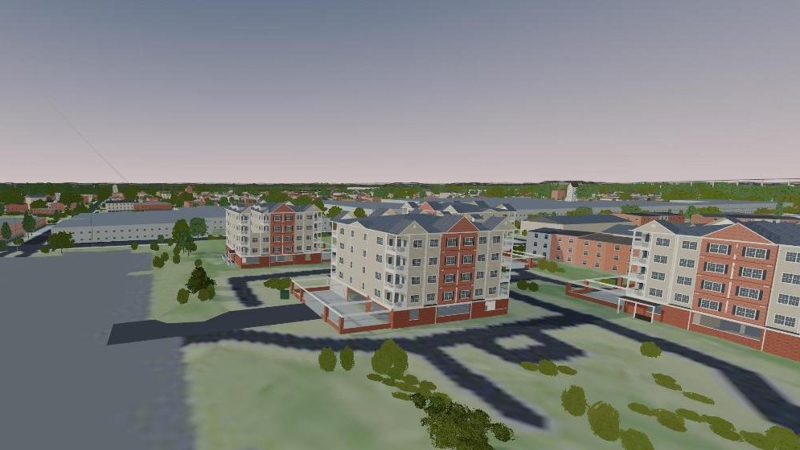
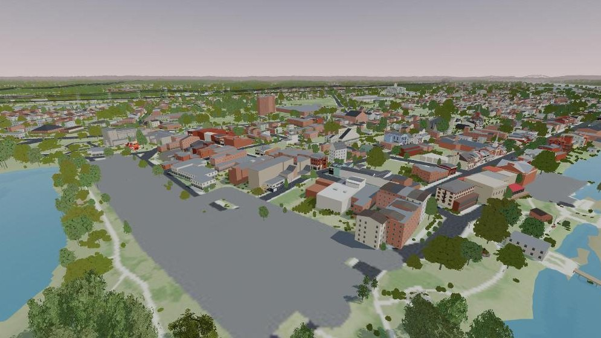
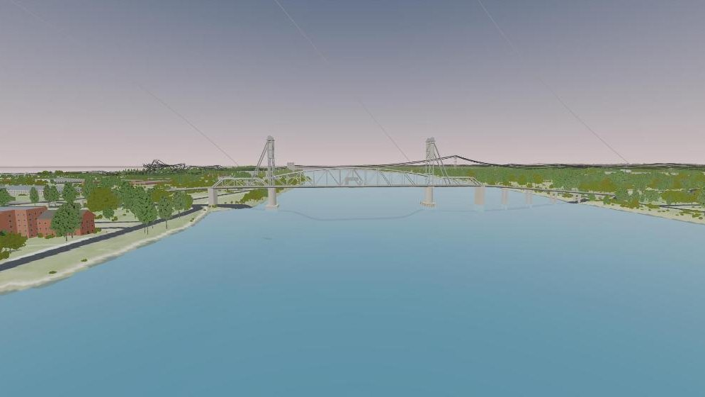
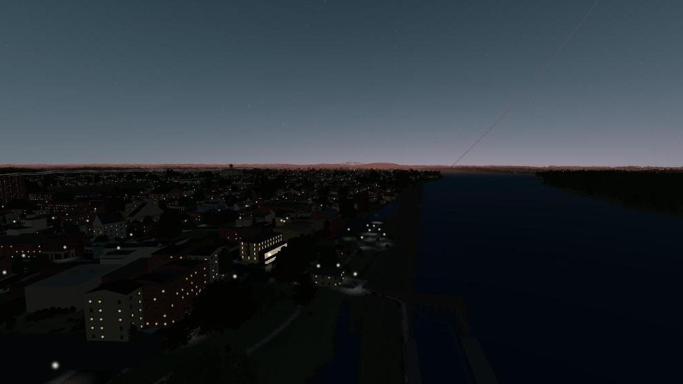

Radcliffe Court: Virtual Multi-Generational Family Living
Multi-generational living in a condo set in a virtual world. All the togetherness, none of the moving trucks.

Why squeeze three generations into one kitchen when you can share an entire town? Radcliffe Court sits on the Delaware in Bristol, Pennsylvania, rebuilt in 3D from surveyed lidar and public records, down to the trash schedule. Everyone gets their own room. Everyone gets the whole riverfront. Nobody fights over the thermostat, because the weather is real and nobody controls it.
Apply for residencyEmail the landlord. He'll send your keys.The neighborhood

Amenities
Twenty-nine of them, every one working, built from 52 layers of measured and published data.
Getting around
- Walk the town at street level
- Fly over it; press F
- Third person: see yourself, press V
- Elevator to floors 1 to 5
- Drive a car, and recover it when stuck
- Ramps, for airtime
- Ride the train, change seats, read the departure board
- Ride the bus, every scheduled route
- Island boat tour from the town wharf
A town that runs itself
- Traffic at the real volume for the hour and day
- Traffic signals cycling on real timing
- Trains and buses on schedule, ridden or not
- The lift bridge rises for passing boats; cars wait at the gates
- Church bells strike the hour, 8 AM to 8 PM
- Trash day: cans out the night before, trucks on their routes
- Opening hours: shops light up when open
- House lights go off at each household's bedtime
Sky and river
- A clock you can run at 1x to 3600x
- Tides that rise and fall with it
- Sun, moon and stars, with star trails
- Weather: rain, snow and morning fog
- Birds: geese in V formation; starlings murmurate on winter evenings
Recreation and family
- Walking tour: history, hours, dishes and prices
- Binoculars, 70 by 100
- Challenges, with hints
- Potato cannon, for conflict resolution
- Family avatars: walk as anyone in the family
- Play together: one link puts everyone in the same town
- Whoever holds the clock decides bedtime


How to move in
- Apply. Tap Apply for residency and send the email.
- Wait for your keys. The landlord adds your email to the residents' list and writes back with the link.
- Let yourself in. Open the link, enter your email, and type the one-time code that arrives in your inbox. No password, ever.
- Pick who you are and walk in. Best on a laptop or desktop with a keyboard.
Residency is virtual. No furniture will be moved, no rooms vacated, and no relatives relocated in the making of this offer.
Actual condos at Radcliffe Court remain available for actual money.
Rent is payable in pizza.